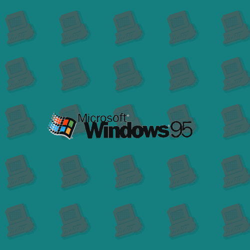
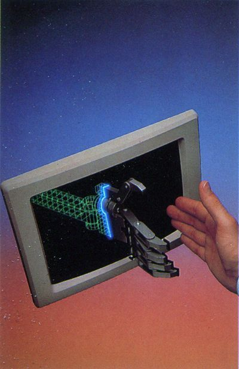

Fileless Malware and memory resident viral programs
Fileless malware is sometimes considered synonymous with in-memory malware because both of them
don't leave any trace one the harddisk and just work on temporary memory.
For this reason some have affirmed that it's a redefinition of the term, "memory resident virus”
that dates back to the 1980s with the birth of the Lehigh Virus,
This comparision though is wrong. Although the way the file gets inside the machine is the same
the differentiation stands in the method of inception and prolongation. Most malware's infection vector involves
some writing to the hard disk therefore leaving something detectable,
Fileless malware on the other hand, from the point of inception until the machine is turned off, aims never to have its
contents written to disk making it hard to detect. Its purpose is to reside in
volatile system areas such as ram.
|
|---|
|  |
Types of fileless malware attacksWindows registry manipulation Windows registry manipulation involves the use of a malicious file or link that, when clicked on, uses a normal Windows process to write and execute fileless code into the registry. Examples of this include Kovter and Powelike, which can transform your infected system into a click bot by connecting with websites and click-through ads. |
|---|
Memory code injectionMemory code injection techniques involve hiding malicious code in the memory of legitimate applications. While processes that are critical to Windows activity are running, this malware distributes and reinjects itself into these processes. The major challenge with fileless malware is detection. Fileless malware attacks use legitimate whitelisted Windows programs like PowerShell, so commands executed by these default programs are assumed to be legitimate and safe so often they are ignored by the antivirus. That’s because fileless malware attacks don’t trigger the traditional red flags or whitelists — they look like a program that’s supposed to be running. This can be tricky for companies. You can’t ban employees from using these programs as you could with other potentially malicious programs, because they’re often integrated into the machines. An example of how malicious PowerShell can bypass detection is PowerShell that has a highly trusted signature that won’t raise red flags, so it won't get checked. The malware slips through security scans because it’s loaded through system memory and can have free access to the operating system. |  |
|---|
Fileless Malware |
Filippo Baracca |
|
baracf@usi.ch
|---|